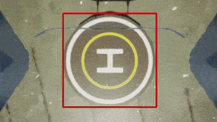
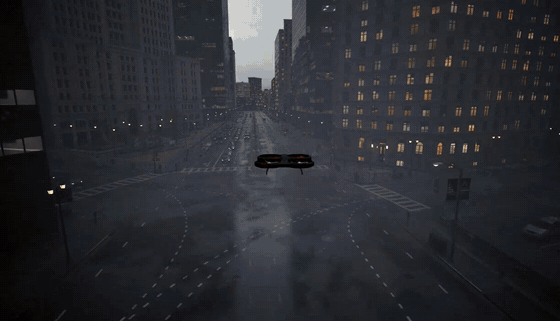
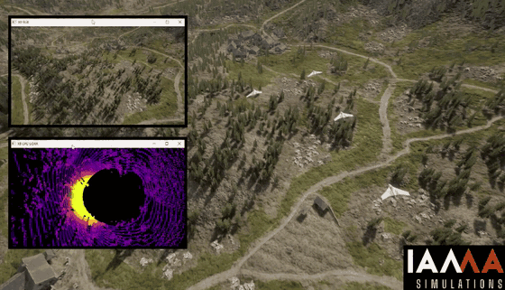
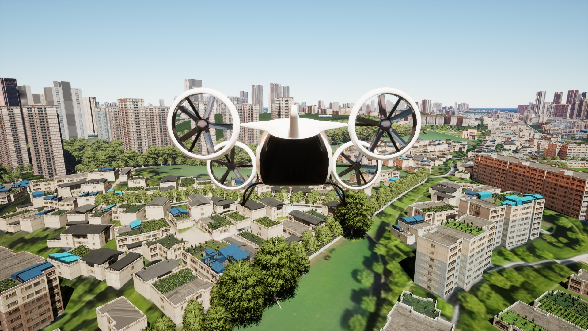
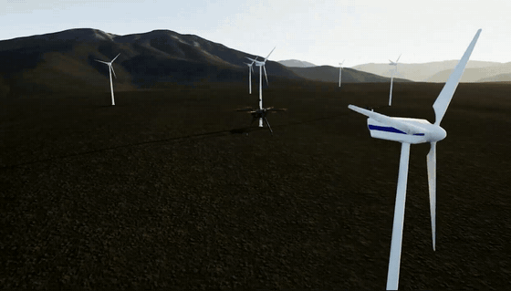
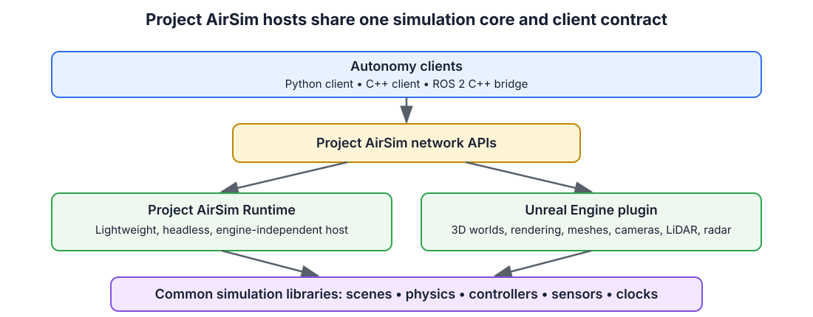

Project AirSim
Project AirSim


Project AirSim is an open-source, extensible, engine-independent simulation platform for autonomous systems. Its simulation core and APIs can run in the lightweight Project AirSim Runtime without Unreal Engine, or with Unreal Engine 5 when a 3D world, rendered sensors, and environment geometry are required.
Integrate an autonomy stack with the Project AirSim APIs, reuse compatible scene and robot configurations, and select the simulation host that fits each test. Use Runtime for fast controller, API, physics, automation, and CI workflows; move the same integration to Unreal when the scenario requires visual fidelity, cameras, LiDAR, radar, or mesh-based interaction. This lets a team vary simulation cost and fidelity without maintaining a separate client integration for every host.
Project AirSim builds on the work of AirSim and provides a modular framework for drones, fixed-wing aircraft, robots, and other autonomous systems.
Download the latest release · Use a pre-built environment · Build from source · Read the documentation
 Autonomous Landing. Perception-guided vehicle control with a live camera stream. |
 Adjustable Weather. Change environmental conditions while the simulation is running. |
 Simulate Your Swarm. Run multiple vehicles together in a shared simulation. |
 Dynamic City. An air taxi operating in a dense Unreal city environment. |
 Wind Turbine Inspection. Inspect renewable-energy infrastructure in a large Unreal environment. |
Large Tilt-Rotor VTOL Fixed-Wing + Cesium. Simulate VTOL flight over geospatial Cesium terrain. |
Table of Contents
Current Repository Capabilities
The current main branch lets you:
Create configurable single-vehicle and multi-vehicle simulation scenes.
Use built-in C++ Fast Physics, JSBSim flight dynamics, Simulink physics models, or extend the C++ physics layer for custom requirements.
Use Simple Flight, PX4 in software-in-the-loop (SITL) or hardware-in-the-loop (HITL), ArduPilot SITL, and manual control workflows.
Integrate custom controllers, actuators, sensors, and robot models.
Simulate fixed-wing aircraft with JSBSim, including Cessna 310 and Skywalker X8 examples.
Connect autonomy software through Python and C++ client libraries or the ROS 2 C++ bridge.
Work with cameras, LiDAR, radar, IMU, GPS, barometer, magnetometer, airspeed, and other configurable sensors.
Run with Unreal rendering, off-screen rendering, or without rendering for controller, API, and physics development.
Published binaries may trail the main branch. Check the
release notes to confirm
which capabilities are included in a particular package, and see the
changelog for repository changes.
Choose Your Starting Point
Run a Pre-built Environment
I want to evaluate Project AirSim, launch an environment, and control a vehicle with Python.
Download a packaged environment from GitHub Releases, then follow the pre-built environment guide.
Build and Extend Project AirSim
I want to customize the simulation core, Unreal plugin, vehicles, sensors, or environments.
Follow the source development guide to build the simulation libraries, plugin, Blocks environment, and client packages.
Run Without Unreal Engine
I need a fast, headless simulation host for controllers, APIs, physics, automation, or CI without changing my Project AirSim client integration.
Use Project AirSim Runtime, the
lightweight, engine-independent host. It runs the same SimServer, Project
AirSim physics, controllers, APIs, and non-rendered sensors without requiring
Unreal Engine.
Runtime supports Fast Physics, JSBSim, Simulink physics, flight-controller workflows, and sensors including GPS, IMU, barometer, magnetometer, and airspeed. It does not provide cameras, LiDAR, radar, Unreal world meshes, or general mesh and robot-to-robot collisions. Its host-side collision support is limited to a flat ground plane for Fast Physics vehicles.
Migrate from AirSim
I have an existing AirSim environment or client workflow.
Start with the AirSim transition guide.
Latest Project Updates
The current main branch contains the changes recorded for Project AirSim
1.0.0, including:
JSBSim fixed-wing simulation with Cessna 310 and Skywalker X8 examples;
a standalone C++ client package and ROS 2 C++ bridge;
GPU LiDAR 360-degree scanning and additional LiDAR validation;
a Python client
step()API; andProject AirSim Runtime and modular scene configurations;
Blueprint vehicle integration, including SimpleDrive SUV examples; and
improved build, toolchain, and CI support for Unreal Engine 5.7.
See Project AirSim releases for the latest published binaries and release notes.
Architecture
Project AirSim has three primary layers:
Simulation libraries provide the base infrastructure for defining robot structures, physics, controllers, sensors, and the simulation scene tick loop.
Simulation host provides the environment-dependent services. Project AirSim Runtime offers lightweight engine-independent execution, while the Unreal Engine plugin adds 3D environments, rendering, mesh interaction, and rendered sensors.
Client libraries expose network APIs for loading scenes, controlling vehicles, and receiving state and sensor data.

For more detail, see the Project AirSim architecture overview.
Experimental Unity Host Reference
The repository also contains an experimental Unity host integration composed of a Unity example project and a native wrapper around the Project AirSim simulation libraries. It is retained as reference code that demonstrates how another 3D engine can host the common simulation core.
The Unity integration is not currently maintained, validated, packaged, or supported by IAMAI and is not part of the supported-platform matrix. Do not assume compatibility with current Project AirSim or Unity releases.
Key Integrations and Reference Documentation
Supported Development Platforms
The supported development baseline is derived from the repository build scripts and package metadata:
Component |
Supported version or behavior |
|---|---|
Linux |
Ubuntu 22.04 is the primary supported distribution |
Windows |
Windows 11 with Visual Studio 2022 C++ build tools |
Unreal Engine |
5.2 or 5.7 |
CMake and C++ |
CMake 3.15 or newer and C++17 |
Linux compiler |
Unreal’s packaged toolchain when |
Windows compiler |
|
Python client |
Python 3.7 or newer, below Python 4 |
ROS 2 C++ bridge |
ROS 2 Humble on Ubuntu 22.04 |
setup_linux_dev_tools.sh recognizes some additional Ubuntu releases, but that
installation logic is not a supported-platform guarantee. Use Ubuntu 22.04 for
the documented and CI-tested Linux development environment.
Hardware requirements are primarily determined by Unreal Engine and the rendering workload. Review the system specifications before installing or building the project.
Source Build Overview
The complete and authoritative instructions are in the source development guide. The basic workflow is summarized below.
1. Install Unreal Engine
Install Unreal Engine 5.2 or 5.7 and set UE_ROOT to its installation path.
On Linux:
export UE_ROOT=/path/to/UnrealEngine
2. Install Linux Development Dependencies
./setup_linux_dev_tools.sh
3. Build the Simulation Libraries
On Linux:
./build.sh simlibs_debug
On Windows, use an x64 Native Tools Command Prompt for VS 2022:
build.cmd simlibs_debug
4. Generate Project Files
On Linux:
./blocks_genprojfiles_vscode.sh
On Windows:
blocks_genprojfiles_vscode.bat
Open the generated workspace and launch the Unreal Editor in DebugGame mode.
Headless Execution
To run a packaged Unreal environment with off-screen rendering:
Blocks{.exe/.sh} -RenderOffScreen
To disable rendering completely:
Blocks{.exe/.sh} -nullrhi
See headless and cloud execution for additional configuration details.
Open Source and Professional Services
Project AirSim’s simulation core, APIs, configuration system, extension points, and reference workflows are available publicly under the MIT License. We want the open-source project to be useful for evaluation, research, development, and real autonomy workflows.
IAMAI Consulting Corp. maintains and extends the Project AirSim ecosystem. The team includes former Microsoft AirSim engineers and provides professional services for organizations that need to turn a prototype into a repeatable simulation or validation workflow.
IAMAI can help with:
simulation-readiness and architecture assessments;
PX4, ROS 2, JSBSim, vehicle, sensor, and autonomy-stack integration;
custom Unreal Engine environments and simulation workflows;
reproducible scenarios and validated builds; and
maintained delivery, updates, and engineering support.
If you have an upcoming integration, demonstration, pilot, or validation milestone, talk to IAMAI about a focused first engagement.
Community and Contributions
Project AirSim grows through practical use, technical feedback, and community contributions.
Submit focused pull requests for code, tests, documentation, and examples
The roadmap is managed through GitHub issues and discussions. Items labeled
roadmap describe
planned direction, while items labeled
need help
identify opportunities for community participation.
Third-Party Interoperability and Licensing
Project AirSim interoperates with third-party engines, libraries, models, and tools, including JSBSim-compatible aircraft definitions. Those components and assets remain under their respective licenses.
Before redistributing or extending an integration, review
Project AirSim license information, NOTICE.txt, and the
licenses under thirdparty/Licenses/.
Copyright (C) Microsoft Corporation.
Copyright (C) 2025-2026 IAMAI CONSULTING CORP
MIT License
Getting Started
Configuration
Physics
Sensors
- Supported imaging/capture camera customizations
- Sample config
- Camera Images Post processing using Neural Network models
- Image post processing settings
- Post processing model settings
- Camera Streaming
- Segmentation
- Lidar sensor
- Lidar sensor settings
- Radar sensor overview
- Radar sensor settings
- Battery sensor
- Battery sensor settings
- Sensor data visualization/display
Controllers
- Flight Controllers
- Simple Flight Controller for Drones
- ArduPilot Flight Controller
- PX4 Autopilot Flight Controller
- Building PX4
- Using a PX4 Controller as Hardware-In-The-Loop (HITL)
- PX4 Lockstep Mode
- PX4 with Multiple Robots
- Using a PX4 Controller as Software-In-The-Loop (SITL)
- Supported airframes
- Setting up PX4 Software-In-The-Loop
- The first flight session
- Setting the GPS origin
- Smooth offboard transitions
- Check the home position
- No remote control
- Using PX4 Mavlink based Gimbal
- Ending a flight session
- Starting a new flight session
- Remote controller
- Advanced PX4 SITL configurations
- PX4 Software-in-the-Loop with WSL 2
Scene & Simulation
APIs & Programmatic Control
Python Client API Reference